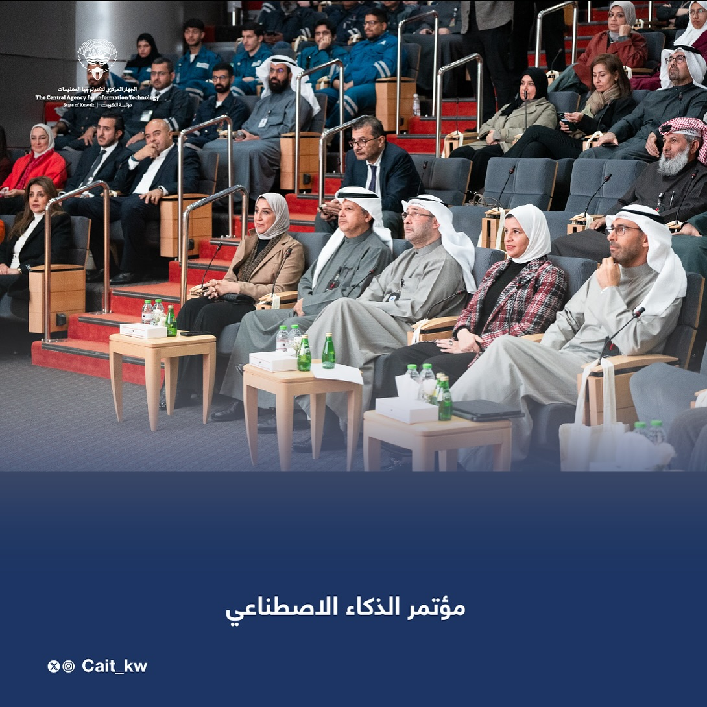

قد يهمك الاطلاع على رابط الجهاز المركزي لتكنولوجيا المعلومات (CAIT).
شبكة الكويت للمعلومات
شبكة الكويت للمعلومات هي شبكة اتصالات حكومية سريعة وآمنة تربط
الجهات الحكومية ببعضها، وتمثل البنية التحتية لجميع مشاريع الحكومة
الإلكترونية في الكويت.
بوابة التدريب
يسعى الجهاز المركزي لتكنولوجيا المعلومات إلى تقديم أفضل الخدمات و
سجل الشركات
يهدف نظام تسجيل الشركات إلى تحسين التواصل بين القطاع الحكومي،
المؤسسات والشركات لدعم عمل القطاع العام وبناء شراكات وعلاقات
مستقرة وناجحة بين القطاعين فنيًا على المستوى الوطني.
البوابة الحكومية
تُعد البوابة الإلكترونية الرسمية للدولة أحد ركائز الحكومة
الإلكترونية...
بوابة ميتا
يشرف الجهاز المركزي لتكنولوجيا المعلومات على منصة "متى"...
مركز البيانات الوطني
مركز البيانات الوطني هو المكان المخصص لاستضافة وتثبيت النسخ
الاحتياطي التلقائي...
شبكة الكويت للمعلومات
شبكة الكويت للمعلومات هي شبكة اتصالات حكومية سريعة وآمنة تربط
الجهات الحكومية ببعضها، وتمثل البنية التحتية لجميع مشاريع الحكومة
الإلكترونية في الكويت.
بوابة التدريب
يسعى الجهاز المركزي لتكنولوجيا المعلومات إلى تقديم أفضل الخدمات و
سجل الشركات
يهدف نظام تسجيل الشركات إلى تحسين التواصل بين القطاع الحكومي،
المؤسسات والشركات لدعم عمل القطاع العام وبناء شراكات وعلاقات
مستقرة وناجحة بين القطاعين فنيًا على المستوى الوطني.
البوابة الحكومية
تُعد البوابة الإلكترونية الرسمية للدولة أحد ركائز الحكومة
الإلكترونية...
بوابة ميتا
يشرف الجهاز المركزي لتكنولوجيا المعلومات على منصة "متى"...
مركز البيانات الوطني
مركز البيانات الوطني هو المكان المخصص لاستضافة وتثبيت النسخ
الاحتياطي التلقائي...
اعرف المزيد عن
الوكالة المركزية لتكنولوجيا المعلومات
إيمانًا من القيادة السياسية بدور قطاع تقنية المعلومات كأداة أساسية
في التقدم والتغيير الاقتصادي والاجتماعي والمعرفي والتنمية البشرية في
الدول المتقدمة والنامية، وتأكيدًا على أهمية هذا الدور، صدر المرسوم
الأميري رقم (266) لسنة 2006 بشأن إنشاء الجهاز المركزي لتقنية
المعلومات.
استقبل معالي وزير الدولة لشؤون الاتصالات معالي الأمين العام
لمجلس التعاون لدول الخليج العربية
استقبل معالي وزير الدولة لشؤون الاتصالات، عمر سعود العمر،
الأمين العام لمجلس التعاون لدول الخليج العربية، جاسم محمد
البديوي، لمناقشة تعزيز التعاون في قطاع تكنولوجيا المعلومات
والاتصالات، واستعراض التطورات الإقليمية والدولية.

ديسمبر 16, 2024
منتدى حوكمة الإنترنت
شاركت دولة الكويت، ممثلةً بمعالي وزير الدولة لشؤون
الاتصالات، عمر سعود العمر، في منتدى حوكمة الإنترنت ضمن
اجتماع وزراء منظمة التعاون الرقمي.
نوفمبر 17, 2024
"استقبل وزير الدولة للاتصالات، عمر سعود العمر، المواطنين
الذين حصلوا على مواعيد مسبقة عبر تطبيق "سهل".
"استقبل وزير الدولة للاتصالات، عمر سعود العمر، المواطنين
الذين حصلوا على مواعيد مسبقة عبر تطبيق "سهل". وتأتي هذه
الخطوة في إطار توجيهات مجلس الوزراء بتعزيز سياسة الباب
المفتوح والتواصل المباشر مع المواطنين.
ديسمبر 05, 2024
معرض الكويت الأول وريادة الأعمال
افتتح معالي عمر سعود العمر، وزير الدولة لشؤون الاتصالات،
منصة "نيكسوس 2024"، المنصة الرائدة للابتكار والتكنولوجيا
وريادة الأعمال. واستنادًا إلى توجيهات القيادة الرشيدة لسمو
أمير البلاد، وسمو ولي العهد، وسمو رئيس مجلس الوزراء، أكد
معاليه التزام الدولة بتحقيق رؤية الكويت 2035.
نوفمبر 07, 2024
زيارة ميدانية من المعهد العربي للتخطيط
استقبل معالي وزير الدولة للاتصالات، عمر سعود العمر، اليوم،
سعادة سفير دولة الإمارات العربية المتحدة لدى الكويت، الدكتور
مطر النيادي، برفقة قيادة مجموعة I & N.
استقبل وزير الدولة للاتصالات، عمر سعود العمر، المواطنين
الذين حصلوا على مواعيد مسبقة عبر تطبيق "سهل".
استقبل وزير الدولة للاتصالات، عمر سعود العمر، المواطنين
الذين حصلوا على مواعيد مسبقة عبر تطبيق "سهل".. This step
comes as part of توجيهات مجلس الوزراء بتعزيز سياسة الباب
المفتوح وتحقيق التواصل المباشر مع المواطنين.
افتتح معالي السيد عمر سعود العمر، وزير الدولة لشؤون
الاتصالات، معرض نيكسوس 2024، المنصة الرائدة للابتكار
والتكنولوجيا وريادة الأعمال. وانطلاقًا من توجيهات القيادة
الرشيدة لسمو الأمير، وسمو ولي العهد، وسمو رئيس مجلس الوزراء،
أكد معاليه التزام الدولة بتحقيق رؤية الكويت 2035.
استقبل معالي وزير الدولة للاتصالات، عمر سعود العمر، اليوم،
سعادة سفير دولة الإمارات العربية المتحدة لدى الكويت، الدكتور
مطر النيادي، وقيادة مجموعة I & N.